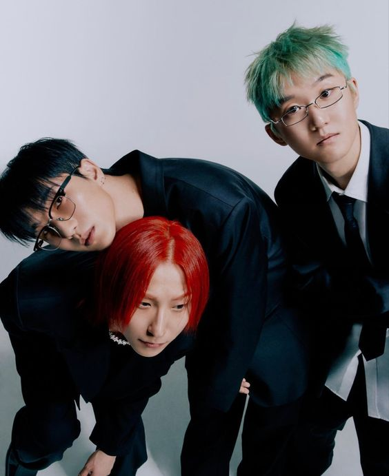

⋆⭒˚｡⋆ Membros da Banda ⋆⭒˚｡⋆

Kim Daniel - vocal principal, guitarras
Shin Dong-gyu - bateria, percussão
Cha Soon-jang - baixo
Poco
miamor(nick)
⋆⭒˚｡⋆ Membros de sessão e turnê ⋆⭒˚｡⋆
Jo Jung-geun - teclados, piano
Jeon-min - saxofone
Hong Seung-gi - obra de arte